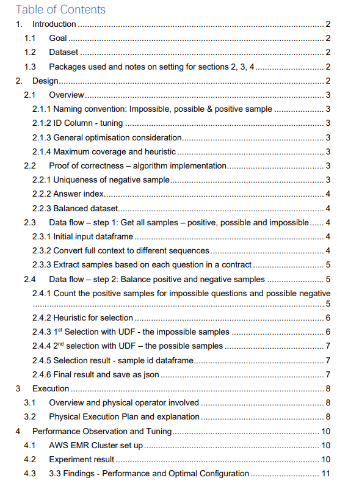
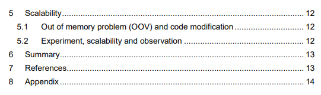
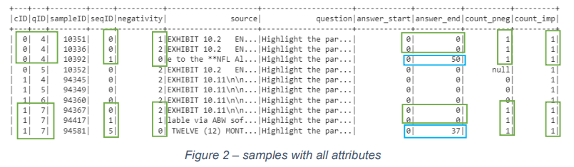
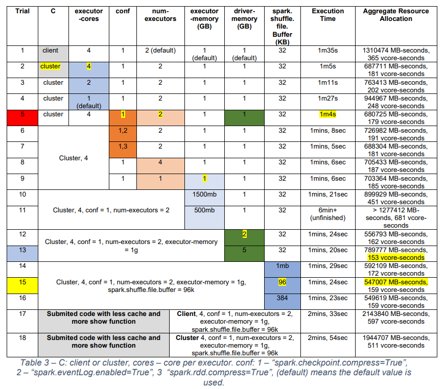

Data Preprocessing and Performance Tuning with Spark
Contents
COMP5349 Cloud Computing - Assignment 2
Data Preprocessing and Performance Tuning with Spark#
Table of Contents#
 
Introduction#
Goal#
The goal of this assignment is to design and implement a Pyspark program that can be run on a multi-node cluster to preprocess a dataset called CUDA in parallel. Specifically, the implementation needs to efficiently create three types of samples based on the answers and also ensure they are balanced.
Dataset#
Figure 1 shows the dataset and the desired output data structure which are both in json format. The context field is treated as the whole contract which contains 41 questions and answers pairs each.


Figure 1 – dataset and desired output 3. ## Packages used and notes on setting for sections 2, 3, 4
Import Packages |
Purpose |
|---|---|
pyspark.sql |
Create SQL query |
json |
Convert final output into a json object |
Note that the submitted code implementation is different for sections 2, 3 and 4.
Section 3 uses code that has cached most of the key dataframes.
Section 2 and 4 have all show functions removed to highlight the key jobs.
The submitted code has some show functions to highlight the key dataframes as illustrated in sections 2 and two caches on the input dataframe and extracted samples dataframe.
Thus, the submitted code performance will be different unless all the show functions are removed.
Design#
This section contains descriptions of the key dataframe design, operation used and the data flow of the implementation.
Overview#
2.1.1 Naming convention: Impossible, possible & positive sample#
In the below description, an impossible sample refers to an answer that belongs to an impossible question in a contract, similarly, possible and positive samples belong to possible negative and positive answers, respectively.
2.1.2 ID Column - tuning#
An integer type id column is made for a faster execution [1] when join with a different table. There are four such id columns made. 1) sampleID refers to the unique id for each sample 2) cID is for each unique contract 3) seqID is given to each partitioned sequence within a contract 4) qID is for each question in a contract. Besides, a negativity column is made where the values 0,1,2 refers to positive, possible and impossible samples respectively.
2.1.3 General optimisation consideration#
Dataframe SQL APIs will be prefered over the user-defined function (UDF) when possible to take advantage of the optimisation engine. Thus, 4 UDFs are used in total, they are for 1) split data input sequences and assign sequence id 2) convert sequence to samples based on question and assign question id 3) select impossible question samples 4) select positive negative samples.
Cache() used for key dataframes to improve time performance.
Join operation will always join the small dataframe to the larger one to improve the speed. though the optimisation engine may do it under the hood automatically.
Since the goal is to improve the scalability of the program when more nodes are used to run applications in parallel, the data is decomposed as much as possible into smaller units so that the benefits from distributed running are maximised.
Since the dataframe is used, the design also follows some principles in relational database management systems (RDMS).
2.1.4 Maximum coverage and heuristic#
To ensure the samples will cover the contract maximally, each type of sample is made unique within a contract if applicable. The heuristic of uniqueness is done with two user-defined functions 1) select the impossible negative samples that have different sequence id from the positive samples given the same contract 2) select the possible negative samples based on the sequence ids of both the positive and negative samples.
Proof of correctness – algorithm implementation#
2.2.1 Uniqueness of negative sample#
Figure 2 demonstrates the correctness of the heuristic when selecting the unique negative samples. The bottom circled rows prove that the selected samples are all unique sequences i.e. seqID: 0, 1, 5. The top circled rows prove that there could be a non-unique negative sample being used if the uniqueness cannot be guaranteed i.e. seqID: 0, 0, 1. Note that the null value for the last two count columns means such a sample is not selected as the final choice.

Figure 2 – samples with all attributes
2.2.2 Answer index#
The blue circled section in Figure 2 shows the correctness of the answer index where the negative samples have 0 for both answer_start and answer_end columns and the positive ones have at least one non-zero value for the two columns. The indexes above demonstrated they are relative to the sequence instead of the original context field.
2.2.3 Balanced dataset#
Figure 3 shows the correctness of the balancing dataset implementation. The first output is the total size of all samples, the second is the number of the final selection of the samples and the third is the number of all positive samples. Since the selected sample size is about three to four times the positive ones, it demonstrates the dataset, that contains positive, possible negative and impossible samples, is relatively balanced.

Figure 3 – different sample sizes
Data flow – step 1: Get all samples – positive, possible and impossible#
The data flow contains 2 main steps which are explained below.
2.3.1 Initial input dataframe#
Figure 4 is the beginning input dataframe. It contains the context field which is the content of the contract and qas which has 41 questions with 0 or more answers.
The operation involves 1) using explode transformation on the paragraph field of the original dataframe.

Figure 4 – Initial input dataframe
2.3.2 Convert full context to different sequences#
Figure 5 The dataframe has the same column value as Figure 4, with additional columns of seq (split from the context field in the previous table) seqID and contract title. The seqID uniquely identifies different sequences within a contract and the contract title is also added which will be converted to contract ID in a later step.
The operation is about using a UDF to select the sequences based on window size and stride. It involves 1) a UDF that takes the input column from Figure 4 and returns sequences of the context with other column values remaining.

Figure 5 – convert context to sequence dataframe
2.3.3 Extract samples based on each question in a contract#
Figure 6 is the dataframe that creates different samples from the sequences based on answers and questions. It contains a unique sample id for each sample. These three types of samples – positive, possible and impossible samples, which related to 0, 1, and 2 in the negativity column. The answer_start and answer_end columns are the start and end index of a whole or partial answer contained in the sequence.
The operation involves 1) applying a UDF to create samples based on questions in a contract 2) using the monotonically_increasing_id function to assign sampleID 3) Join with a contract table which contains a title with contract ID to obtain cID. Note that the contract table is made with the zipWithIndex function to ensure continuous consecutive ids.

Figure 6 – sample dataframe
Data flow – step 2: Balance positive and negative samples#
2.4.1 Count the positive samples for impossible questions and possible negative*#
Figure 7 are two dataframes that count the number of impossible and possible negative samples that needed to be kept which is shown in the third column the two dataframe.
The operation involved are: 1) select the relevant fields from Figure 6 for the impossible, possible and positive samples based on the negativity column 2) left join operation on the impossible/possible dataframe with the positive sample based on cID and qID 3) groupBy cID and qID 4) countDistinct operation on positive samples. For the calculation that requires an average, we will 5) count the contract that contains the positive sample 6) select the dataframe and divide the positive sample count by the contract count 7) round operation on the result column to the nearest integer. Note the default behaviour of counting null in spark is treating it as 0.
 ,
,

Figure 7 – count for different samples in a contract for each question dataframe
2.4.2 Heuristic for selection#
Figure 8 shows three dataframes for possible, impossible negative samples and positive samples. In the first two dataframes, the third column contains a list of dictionaries with two keys, the sequence id and the sample id.
Operations for the first two dataframes are 1) Group by contract and question 2) create_map operation to save the sequence id and sample id as map type 3) collect_list operation to turn it into a list under the third column in Figure 8.
The third column for the third dataframe contains the sequence id for the positive sample which is used later to satisfy the heuristic of non-overlapping sequence between positive and negative samples.
The operation used: 1) group by contract id 2) aggregate function 3) collect_list function to save each sequence id for each positive sample to satisfy the no overlap between positive and negative conditions when selecting the negative samples.


Figure 8 – heuristic condition dataframe
2.4.3 1st Selection with UDF - the impossible samples*#
The dataframe in Figure 9 has an additional pos column with contains a list of sequence id in the positive samples in which the cID and qID matched with the impossible question. In the case where no such positive sample, it appears as null value.
Operation is: 1) left join the tables in Figure 8 so that every impossible sample in a contract is assigned with a positive sample list.

Figure 9 – joined datafarme where the impossible samples are ready to be selected via a UDF based on the heuristic – pos column
Figure 10 is the returned dataframe after the impossible samples are selected. It has the additional imp_id_keep column containing all unique sample ids for selected impossible samples and the seqID_imp contains the sequences id for each impossible sample so that when selecting the possible negative samples, only the unique one will be chosen if possible.
Operation is: 1) apply a UDF with input from Figure 9

Figure 10 – sample ids to be kept for the impossible dataframe
2.4.4 2nd selection with UDF – the possible samples*#
The below table contains the number of possible samples to keep i.e the count_pneg column. It also contains pos and seqiD_imp columns which are used to satisfy the heuristic when selecting a unique negative sample. The heuristic is that the negative sequence is unique and that does not exist in the positive ones.
Operations: 1) left join the possible sample with the impossible samples (Figure 10) and the positive sample (Figure 8) based on cID and qID.

Figure 11 – joined dataframe where the samples in possi column are ready to be selected based on the heuristic – the pos and seqID_imp column
2.4.5 Selection result - sample id dataframe#
The column of the first table below contains a list of final sample ids for each question in a contract. The two tables on the right are the flattened version for such results for both the possible and impossible samples whose id value will be used to select the final samples. The leftmost image below is the intermediate dataframe for the two resultant tables on the right.
Operations are: 1) explode res column 2) select an alias to rename the table column


Figure 12 – dataframe that contains the final sample ids to select from the negative samples
2.4.6 Final result and save as json#
The table below is the desired output format where the source field contains the segments that contain the answer to a question in the question field. The answer start and end are the indexes of that answer relative to the source field. The below table is then converted into a json file with a key matched with the column name.
Operations are: 1) join the two right tables (Figure 12) with the sample dataframe (Figure 6) of the same negativity 2) union the impossible, possible and positive samples 3) select the relevant columns as below 4) create_map to convert columns into dictionary 4) collect_list to convert all columns into a small dataframe with one column and one row in which the value is a list of dictionaries. 5) save the final result as a json file.

Figure 13 – dataframe in the desired the sample format
Execution#
Overview and physical operator involved#
This section contains descriptions of the execution plan of key jobs and some screenshots output from the Spark history server are used.
There are 40 completed stages and 55 skipped stages.
Note that the below screenshot is taken from the Direct Acyclic Graph (DAG) from the last job execution in Figure 16. A grey box means the dataframe used is cached, otherwise, it is displayed as blue.
Physical Operator (dataframe) |
Explanation |
|---|---|
Scan Json |
Read json file |
InMemoryTableScan |
Retrieve cached dataframe |
WholeStageCodegen |
Whole-Stage Code Generation - Physical query optimization in Spark SQL. |
Generate |
Similar to flatMap in RDD |
BatchEvalPython |
Apply Python UDF |
Map |
Apply a transformation to each element in the dataframe |
CustomShuffleReader |
Optimisation applied to shuffle partitions |
mapPartitions |
Similar to map but on partitions |
BatchQueryStage |
Batch process the query - parallelism |
ObjectHashAggregate |
Apply hash-based aggregation |
Union |
Union two dataframes of the same schema |
Exchange |
Shuffle Exchange between jobs, send data across the network |
mapPartitionsInternal |
E.g. a filter operation is applied |
Table 1 – physical operator and related explanation, referenced from the spark official website |
Physical Execution Plan and explanation#
Stage 47 image below shows the job of reading in the given json file dataset to a pyspark dataframe (Scan json) with spark internal optimisation (WholeStageCodegen).
Stage 93 image shows the job of the union operation that output the final selected two types of negative samples and the positive samples to form a new resultant dataframe. It is demonstrated by three WholeStageCodegen blocks pointing to the union block.
The right image in Figure 15** refers to the job where the different samples are generated. The plan has an operation called shuffleQueryStage whose output is used by many other operations (based on the number of links). Thus, it is recognised as the UDF of getting different samples (Figure 6) because the sample dataframe is the one being cached and reused the most.
The left image in Figure 15 is a representative illustration showing when a UDF is applied e.g. the one to balance the possible negative sample. The name BatchEvalPython also indicates so where the python UDF is batch processed in parallel by multiple cores.
Stage 91** image** below is a representative job where a join operation is applied between two dataframes. For example, joining a positive and possible negative samples would use such execution plan. CustomShuffleReader block indicates the dataframe is read from different partitions that are re-distributed by the shuffle operation. The two WholeStageCodegen blocks are joined into a new WholeStageCodegen block.
Stage 94 image below is the last stage where the whole dataframe is converted into a new dataframe with one column and one cell which contains a list of dictionaries with each key matching with the old dataframe columns so that it will be outputted as a json file. The exchange block means data are exchanged from multiple processes, ObjectHashAggregate block shows that the data is then aggregated and the mapPartitionsInternal indicates the final results are mapped and transformed to the desired output format.


Figure 14 - union between three types of samples

Figure 15 – UDF and most connected operator block

Figure 16 – Overview of the all the jobs, from the last job’s DAG
Performance Observation and Tuning#
The following section tests the implemented python spark script in a multi-node cluster. We will investigate resource consumption, especially memory usage. Various spark configurations will be examined and the optimal one will be chosen.
AWS EMR Cluster set up#
The below table shows the configurations used when setting up the experiment for this section.
Release label |
emr-6.5.0 |
|---|---|
Tick options |
Hadoop + Spark |
Instance Types |
c4.xlarge |
vCores |
4 |
Memory (GB) |
7.5 |
Storgae |
EBS only |
Instance count |
1 Master, 3 Cores |
Other settings |
Default value |
Table 2 – AWS EMR Cluster Configuration |
Experiment result#
Table 3 shows different experiment trials with different spark-submit configurations which can be found in [2]. The experiment follows the control and treatment group design. The cells that contain the same colour belongs to the same group where different values will be tested while other non-highlight columns’ value remains the same. The yellow highlighted number is the optimal value within the group.
The column aggregate resource allocation has two values, the MB-seconds refers to the aggregated amount of memory the application has allocated multiplied by the application running time, similarly, the vcore-seconds value refers to the CPU consumption.
Trial 15 configuration is the optimal choice for least memory consumption while trial 5 is optimal in terms of time usage and trial 13 is optimal for CPU consumption.
Note that trial 11 is unfinished as most memory is allocated to the driver but not the executor. The maximum threshold for driver and executor memory is 5632 MB.
Trial 17 and 18 uses the submitted code where intermediate output is needed and so it contains a few show function with less cache to avoid the memory problem when meet the large dataset. Other trial is only tested on the small dataset called test.json.
Note that almost all key dataframes are cached in the below experiment, which is different from section 4 where only one dataframe is cached to avoid out of memory problems.
The reason why such a difference in performance between the client and cluster mode is that the cluster mode let the driver runs in the application master which reduces the network latency between the drivers and the executors.

Table 3 – C: client or cluster, cores – core per executor. conf: 1 – “spark.checkpoint.compress=True”, 2 – “spark.eventLog.enabled=True”, 3 “spark.rdd.compress=True”, (default) means the default value is used.
3.3 Findings - Performance and Optimal Configuration#
The below table concludes the different trial groups as displayed in Table 3. The values in the trial comparison column match the trial number in Table 3.
The patterns observed via the above different trials are:
The more executor cores used, the less total memory usage.
The driver’s memory can impact the performance heavily.
Increasing the executor’s memory is not likely to have a big impact on improving the performance.
The shuffle buffer size can affect the performance to some extent.
The optimal number of executors is crucial to improving the performance.
Different types of compression configuration can reduce memory usage to some extent.
Trial Comparison |
Conclusion |
|---|---|
1, 2 |
cluster mode uses less memory resource. |
2, 3 |
4 executor cores are better than 1. |
2,3,4 |
The more executor cores the more memory optimal. |
5 |
“spark.checkpoint.compress=True” helps reduce memory usage. |
5.7.8 |
num-executors = 2 is the optimal. |
9, 10,11 |
executor-memory = 1g (default) is optimal. |
12,13 |
driver-memory = 2g is optimal. |
14,15,16 |
spark.shuffle.file.buffer = 96k is optimal. |
Table 4 – a conclusion based on different trials from Table 3* |
Below is the final optimal choice after memory tuning.

Figure 17 - optimal
Scalability#
This section aims to compare the execution time performance of spark script on two different sized datasets – CUADv1.json (large, 40MB) and test.json(small, 7MB). We will also discuss the scalability of the program.
Out of memory problem (OOV) and code modification#
Below is tested on the colab environment with the CUADv1.json for the sanity check. After the last successful run, it is realised that colab will cache the variables which is another main reason why out of memory problem occurs. Note that all dataframe value under the cache function mans that all dataframes are cached, similarly, for the show function column, it means all dataframe is shown.
Trial |
Ram (GB) |
Cache function |
Show function |
sucess |
|---|---|---|---|---|
1 |
12 |
All dataframe |
All dataframe |
Failed |
2 |
12 |
All dataframe |
None |
Failed |
3 |
12 |
Initial input dataframe |
All dataframe |
Failed |
4 |
25 |
Initial input dataframe |
All dataframe |
Failed |
5 |
25 |
Initial input dataframe |
None |
Success |
6 |
12 |
Initial input dataframe |
None |
Unknown 15mins+ |
Table 5 – local colab environment OOV problem |
Experiment, scalability and observation#
Table 6 shows the time required by the larger dataset CUADv1 and the small dataset.
The configuration number below refers to the trial number in Table 3. And the actual configuration is the same as that trial number in Table 3.
Configuration 15 and 2 comparison shows a significant impact on the buffer file size. A larger value i.e. 96k as seen in 15 would reduce the time by nearly 1 min compared to configuration 2 with 32k. Configuration 16 is thus tried which has a 384k buffer size. It did not show an improvement in execution time compared with the 96k buffer size. Thus, a medium level of such value is considered optimal. Configuration 7 uses compression on the RDD, which does not improve the time performance. This may be caused by the implementation difference between RDD and the chosen dataframe.
Dataset / configuration |
15 |
2 |
16 |
7 |
|---|---|---|---|---|
CUADv1 |
2mins, 27sec |
3mins, 15sec |
2mins, 30sec |
2mins, 35sec |
Test |
1mins, 4sec |
1mins, 8sec |
1mins, 5sec |
1mins, 6sec |
Table 6 - time comparison between the CUANv1 and test dataset on buffer file size and rdd compression |
The general observation is:
The size differs by a factor of 5.7 while the time taken differs by 2.3. Based on the trend drawn from the above table, an increase of six times in dataset size could cause the execution time to double.
The above table shows that the optimal configuration drawn from the small dataset is also applied to the large dataset and that the time duration patterns with different configurations in a small dataset match those in the large dataset. I.e. if a configuration in a small dataset takes 2% more time than the optimal one, such configuration will also take around 2% more time when applied to a large dataset.
Different configurations have a noticeable higher impact on the execution time when the dataset is larger.
Based on the results from the above table, the scalability of the program is reasonable. For example, in real life, a legal case could involve hundreds of documents. If 100 documents with an average size of the test.json needed to be preprocessed, the program may then takes more than 1.5 hours. This is a reasonable outcome in real life since a standard court case lasts for days.
Summary#
In this report, a spark program for preprocessing a dataset in json format is designed and implemented. It is tuned and evaluated via different spark configurations until an optimal solution is found. The data flow and the scalability of the program are also discussed in the report to explore different potentials in spark application performance tuning.
References#
[1] |
“Tuning Spark,” 2022. [Online]. Available: https://spark.apache.org/docs/latest/tuning.html. |
|---|---|
[2] |
“Submitting Applications,” spark.apache.org, 2022. [Online]. Available: https://spark.apache.org/docs/latest/submitting-applications.html. |
[3] |
“Spark Configuration,” spark.apache.org, 2022. [Online]. Available: https://spark.apache.org/docs/latest/configuration.html#compression-and-serialization. |
Appendix#
AWS EMR workflow
Tunnelling |
SSH > tunnel > 8157 port then select auto, dynamic > add |
|---|---|
Emr-socks-proxy using chrome extension switchyOmega |
Copy and apply change if used for the first time function FindProxyForURL(url, host) {
} |
Install git |
sudo yum install git |
Personal access token |
git clone |
Move files |
Move the data file to the home directory |
Upload file to hdfs |
hdfs dfs -put test.json CUADv1 |
Check hdfs directory |
http://ec2-35-175-237-164.compute-1.amazonaws.com:9870/ |
Check app memory usage |
http://ec2-35-175-237-164.compute-1.amazonaws.com:8088/cluster |
Check job history |
Web UIs include HDFS Namenode, YARN Resource manager and Spark history server.
Web UI |
Location |
|---|---|
Spark Job history |
|
Yarn Resource |
|
HDFS file sytem |


3 nodes * 4 vcores per node = 12 total cores, 5632 = 5.5GB memory per node * 3 = 16.5
Figure 18 - port 8088 Yarn Resourced Manager


Figure 19 - configuration yml file – port 8088/conf

Figure 20 - HDFS home directory – upload test.json

Figure 21 - Spark application timeline

Figure 22 - Example of terminal output

Figure 23 - yarn application -status <app_id>
Join vs left join

Figure 24*
Translation between question text to dataframe operation.
Text |
Dataframe operation |
|---|---|
For each |
join,groupBy |
Other … |
filter |
Select n |
limit(n) |
Notes
Design the pseudo-code first then design the dataframe. If requires any comparison between columns, then add an ID column if possible to avoid comparing long text e.g. compare the question id field over the question text field.
In calculating this average, the denominator should only include contracts that have at least one positive sample for the question concerned. Round to integer.
The CUAD dataset treats the entire contract as a single paragraph - The “contract” is the text as found in the context field (the contract text).